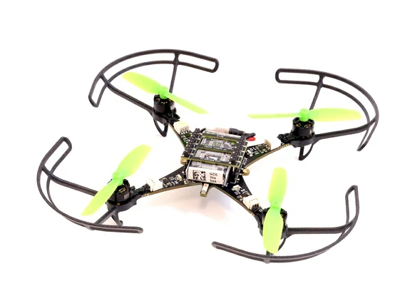

LEARNING LOG · 飞控基础
Crazyflie 飞控学习路线：从 Brushless 入门到控制链路

THE LEARNING PLATFORM
从这架小飞机开始。
认识硬件、读懂遥测，再沿源码理解飞控闭环。每一阶段的学习都落到一个可复查的产物。
按阶段阅读必要文档，然后马上做一个最小实验。第一周完成连接、姿态日志与固件编译；第二周理解飞控链路；第三周开始状态机与机构台架。节奏可调整，每一步用产物验收。
请启用 JavaScript 查看十阶段交互路线并保存学习进度。